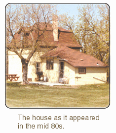

This story is based upon the real history of my family home. Most of the details in this account are fictional.
As was customary in 1901 Margaret Teper was already engaged at the age of 17. She was taller than other girls her age. She had long limbs and a longish face that certainly were not the style. She was not ugly, but her beauty was not the kind of beauty that one would associate with a young, energetic girl of 17 in 1901.
She had met Arthur Townsend in the fall of 1900 when he was escorting his cousin to one of the balls that St. Mary's Angligan Girls Academy would occasionally throw. When he offered to walk her to the cab stand she most certainly felt that he was forward for a young gentleman. She did not allow it.
On the 30th of June 1905 Margaret and Arthur were married at the Apostles of Jesus Church at 1600 St. James Street in Winnipeg. Margaret wore her Gradmother's wedding dress, which she thought frightfully old fashioned.
Those present at the wedding included: The Bishop William Randel and his wife, Colonel Samual Bedson and his wife, The Right Honourable Arthur Mackenzie and his wife, The Right Honourable Duncan MacLeod and his wife, and Mr. Staurt McLean (then mayor or Winnipeg) and his wife.
Amongst the varied gifts was a parcel of three acres of land in Stony Mountain from Colonel and Mrs. Bedson, long time friends of the Tepers'. It was agreed that the new couple should endeavour to build their home on this property.
The couple spent their 14 day honeymoon in Toronto with Jane Fortham, Arthur's 83 year old aunt. The couple was then separated because Arthur had to travel west to British Columbia to begin preliminary work on a new branch of the Canadian National Railroa d. Margaret stayed with her parents in their River Heights Home.
In 1879 space limitations at the Lower Fort Garry Prison constituted the building of a new Prison in the town of Stony Mountain about 15 miles from Winnipeg. Stony Mountain is literally built on a 3000 meteorite that juts decidly out of the Canadian prairie. The prominent Easterly peak of the town was the location chosen for the prison.
On the 16th of May 1906 Arthur and Margaret took the train to Stony Mountain to survey the lot and to make plans to build a house on the property. They also brought a picnic of cold chicken and coffee which Mrs. Teper had supplied. They soon discovered that the property was not at all suitable for the kind of house that they had imagined.
Margaret had thought that building a house with the basic framework of her parents' house with a few of the modern enhancemnets that she'd read about in New York Architectual magazines might be in order, but the trip to Stony Mountain made it clear that getting building supplies to the location would be extremely difficult.
Both Arthur and Margaret agreed it would be best to purchase all the components of the house proper from a prefabricated building manufacturer in Ohio. This would spare the young couple the considerable expense of moving an unknown quantity of building supplies and labour the fifteen miles across the basically unbroken Canadian landscape.